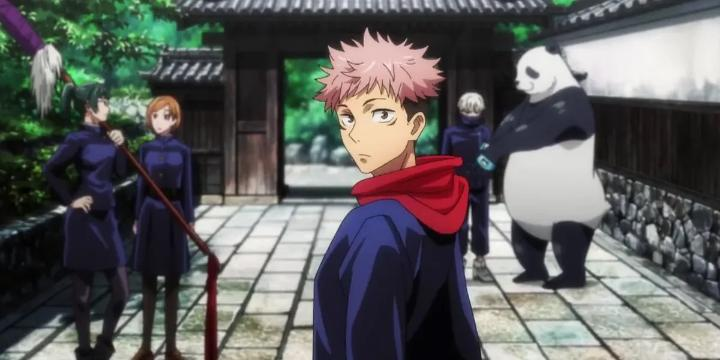

Disclaimer: This review covers Season 1 (episodes 1 - 24) of "Jujutsu Kaisen."A brief recap on my exposure to this anime: I understood it was one of the more popular new shows, airing at the dawn of a new generation. My first introduction was the film "Jujustu Kaisen 0" in a movie theatre, joining a crowd to witness what would one of many record-breaking box office smashes. And my opinion wasn't great... it felt like just another shonen anime with a run-of-the-mill cast of characters, a modern version of "Bleach," albiet with better than average animation when it counts. But I hadn't seen the television that led to the series. Even though the film was a prequel, perhaps I wasn't giving it a fair shake. So I finally got around to watching the first season of "Jujutsu Kaisen." ... and yeah, my opinion hasn't really changed. Not in the slightest. This is an all-around, run-of-the-mill shonen anime. And in the modern pantheon, it's a direct fill-in for "Bleach." Complete with a high-spirited, sometimes cool, sometimes arrogant, black-jumpsuit uniformed cast and a grafitti-laiden rap ending theme. What took me aback the most was that this was a shonen clearly made for television, a perfect fit for North American channel blocks like YTV's "Bionix" or Adult Swim's "Toonami." Literally everything, from the character personalities, their designs, the frequent and out-of-place humour, the music, the quality of the animation... if you told me this was animated in 2004, I'd believe it. It even has the mid-episode commercial bumpers on Viz Media's Bluray release! It's weirdly nostalgic to watch "Jujutsu Kaisen." But not in a good way. I've watched hundreds of television anime since 2004, from standalone original stories, to mainstream action shonen. And by and large, it's gotten SO MUCH BETTER in writing and art than it was decades ago. I guess shows like "Naruto" and "Bleach" were popular for a reason, and are still fondly remembered today, but I can't fathom what that reason is, when there are so many other, better, options, even in the same genre. Part of "Jujutsu Kaisen's" appeal might be in the slightly interesting twist towards its main character's situation. Yuji Itadori is an ordinary high school student... sort of. He's unusually strong and fast for a teenager. A member of his school's tiny occult club, he accidently gets caught in a fight with a manifest curse monster, and to survive the fight, he swallows the cursed finger of Ryomen Sukuna, a powerful "King of Curses." He becomes a vessel for that evil spirit, capable of destroying the country without breaking a sweat, but somehow, Yuji's naive purity and natural strength allows him to keep Sukuna contained. This opens the door to Jujutsu Kaisen (literally "Jujutsu High School"), where a small team of teachers and students with a special set of skills work to rid the world of curses. Their organization sees Yuji as a threat now, but if he can find and swallow Sukuna's 19 (yes, 19, not 9) other fingers before they execute him, they could rid the world of Sukuna's evil once and for all. Let the scavenger hunt adventure begin!So Yuji is almost certain to die when the show is done, unless some loophole between him and Sukuna is found. Sukuna's presence, fighting control from Yuji, and sometimes manifesting as a gravel-voiced second mouth on Yuji's head or hand, adds a little spice to what is otherwise a plain and boring dish. Yuji's naive and optimistic personality surprised me, not at all matching the dark tone of the promotional materials. That carries over to the first and second-year student characters, each with moderately simple background motivations and bizarre quriks you'd only see from Japan (in "Kaisen 0," we already saw the talking panda and the kid that only speaks words from rice-ball ingredients). It's common to see scenes of them excited about food, challenging each other to a race, etc. ... not only is it humour ripped from the 2000's, it's humour we'd usually see making up the bulk of "filler" episodes. Wow, filler episodes... I didn't think productions would still be using that cheap hack in 2020. And it's debatable on whether it's actually entertaining... shonen's long-running magic trick is for you fall in love with the characters if you watch enough episodes of them playing the fool, and it works here, if only barely.Those off-the-wall personalities at least make characters more memorable, and it's the viewer's love of one or two characters that make the show worth sitting through, although exactly who your favourite characters are might vary against other fans. Sukuna's scheming is fascinating, mentor Satoru Gojo is effortlessly cool and goofily aloof at the same time, and Suguru Geto looms as a serious threat in the distance (with a bold introduction, not batting an eye as a demon ally burns a dozen innocent bystanders alive). Potential deaths of innocents, of hero characters, blood and limbs getting cut off raise the stakes, but never to the level of MAPPA's other hit show, "Chainsaw Man." "Jujustu Kaisen" makes it clear they aren't afraid to just comic-book-heal a character on a whim, at expense of the viewer's concern that their favourite characters are ever really in danger. That applies to the sidekick villains too, who tend to escape and perfectly heal after a multi-episode fight where, in any other series, they'd have died - no doubt to have them return with a vengance, and to extend the series length magnitudes more than it should. In the dozens of other anime about monster hunting, at least the monsters have some unique, creepy designs to them, but even that's a let down in "Kaisen" - every curse is shockingly ordinary and instantly forgettable, with little backstory or hook to their presence at all. These were also flaws to the movie "Kaisen 0," but at least MAPPA's awesome action animation should save the day, right? ... right? Shockingly, no, for the most part. Again, the first season of "Jujutsu Kaisen" looks like it was animated in 2004, without the fluid polish or experimental sensory motion animators have brought us in the decades since. There are frequent action scenes, and I suppose they're adaquete, but certainly not impressive by almost any metric. That was true from the early episodes, and to my disappointment, still true in the final episodes of Season 1. What's going on here, MAPPA? I know they're better than this... is it possible they limited themselves on purpose to deliberately recreate the style of a decades-old show?I will point out the exception to this issue of "quality" within Season 1. The 24 episodes are split somewhat cleanly into smaller arcs, each barely the length of a feature film, including a middle and ending arc I'll call "theatre bullies" and "cursed bridge." In these, the main cast are assigned to investigate a curse, revealing troubled individuals, murders, and ties to the franchise's larger villains. These are much darker in tone, more violent, more emotional, and animation is more expressive, both in facial expressions and the effects-heavy brawls. There's still quirky character banter and humour, but it's sprinkled in more sparingly. THESE are good! They're much close to my expectations with the show, have much better pacing and balancing, better character development, better animation, better everything! But we're also talking about... maybe 1/3 of the season? With the best action animation taking up 1/10? It's hard to justify watching all the extra episodes, that genuinely feel like filler episodes with empty calories, to get to the cream in the middle. The quality difference is so stark, I'd swear the show was produced by two different studios with no overlap. Is it possible MAPPA farmed out the majority of the episodes somewhere else? The majority of the show is the definition of something you'd put on tv running in the background, and just casually listening to it won't cause you to miss anything of significance. The English dub, and for that matter, the Japanese dub too, ain't great for most characters, coming off as surprisingly wooden and plain in some cases. The dub caught me off-guard... it's one of the weaskest dubs I've heard in a long time, in a genre where it should be easy to exude energy and personality, as if half the cast was brand new to anime voice work. Music is the show's biggest highlight of interest, relying heavily on rap and rock tracks in the middle of fight scenes, but this can feel overused, especially in Season 1's second half. As a bonus feature, the Blurays each include paper ads to three other manga series, and a digital chapter from the "Kaisen" manga. Cool synergy there from Viz, America's leading manga publisher and sometimes anime distirbutor. It's not a e-book though, it's a bonus feature on the disc menu. With no zoom-in option. Hope you have a 80" television to make out text on each page. Also, the "Part 1" Bluray release ends with an arc whose final episode is the first in "Part 2," a bizarre oversight clearly made to limit both releases to 12 episodes. They sort-of fix that later with dedicated "arc" Bluray releases, but without numeric indicators ("Season 2," "Season 3," etc.), which is just as confounding. After all I just said, is there a place for "Jujutsu Kaisen?" Sure, it fits the bill as an exciting, if somewhat mundane, shonen action series. The type you can casually recommend to any teenager that's just starting to get into this cool thing people call "anime," but are afraid will judge you for recommending the much better, less mainstream, weirder stuff. It's goofier and more light-hearted than it's advertisers want you to think, which helps further in making it accessible. And the one thing almost all shonen anime have is that they're fun, even in a low-quality brainrot sort of way. And I do love the first ending theme credits of Season 1, featuring the heroes dancing their way out the door. But I'm grasping at straws, and no, I'm not going to keep watching because "it gets good 30 episodes later." I'll state this simple truth: "Jujutsu Kaisen" is the most overrated anime of the past decade.
- "Ani" More reviews can be found at : https://2danicritic.github.io/ Previous review: review_Joshiraku Next review: review_Jujutsu_Kaisen_0